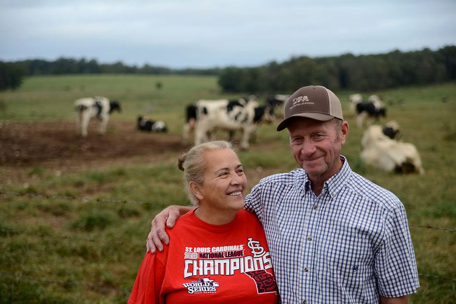
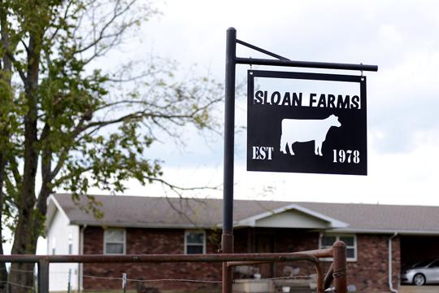
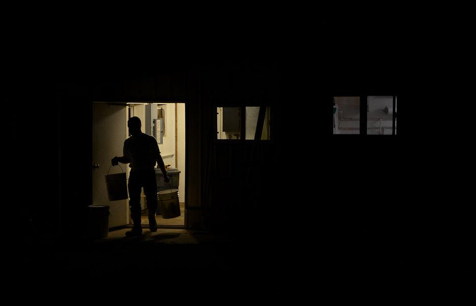
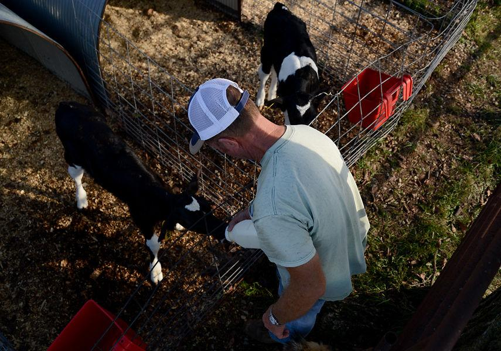

MOUNTAIN GROVE — Like a whisper, the first of the fall leaves crunched beneath the car's tires as it drove down Route 76. Half an hour passed without a person in sight. The tires grew louder as the smooth blacktop crumbled into a rough gravel road. A quaint house, a sleeping cat and two eager dogs with wagging tails appeared just past a row of trees. Behind them, more than 100 Holstein dairy cows roamed across hundreds of rolling acres. Norris and Annette Sloan call this 700-acre farm home.

Norris and Annette Sloan stand on their farm on Oct. 9 in Mountain Grove, Missouri. Although they are not sure what the future brings for them and their farm, the Sloans said they are thankful for each other.
Forty years ago, you could drive down that same country road and see 30 dairy farms in a 2-mile radius, Norris Sloan said. Now, you would see only two. To drive down the gravel road to Norris and Annette Sloan’s farm is to drive into an era that is fading. The reality is this: Missouri's dairy industry is shrinking. Larger dairy operations skew the economies of scale that small dairy farmers are so used to operating on. There's an oversupply of milk in the country, and milk prices are falling. The cost of becoming competitive is much larger than the size of the paycheck. The job is too labor-intensive to interest a young person. And the Sloans are getting older.

"These things have plagued me, and we — me and my wife — can see it coming," he said. The Sloans understand they'll have to come up with a retirement plan soon. This might mean shutting the doors to the farm, adding another to the long list of small dairy farms disappearing in the state. They hope they can live off of the money they make from the farm, but its worth continues to decrease alongside the industry. With every small dairy farm that folds, a larger operation gains more opportunity. But Missouri doesn't have many of these large operations — maybe a dozen. That creates less economic activity in Missouri and more in other states. For those who cherish the idea of buying locally grown products, that may one day be a thing of the past. The questions some are starting to ask are, do we have to produce the milk we consume? Is the industry worth saving? "I can see somewhere down the road in 10 or 15 years, Missouri is going to be wondering where our milk is going to come from, because we have no milk in our state," Sloan said. "Maybe consumers don’t care about that."
Missouri isn't the first state that comes to mind when someone says "dairy." Wisconsin, New York, California, sure. But not Missouri — and there's a reason why. The state's dairy cow count ranked 25th in the country in 2018, and the state ranked 26th in total milk production last year, according to an MU study. From 2000 to 2014, the number of commercial dairies fell 45.5 percent. The number of milk cows in the state has also been on the decline since the early 1990s. As of January, there were roughly 84,000 milk cows in Missouri. In 2000, there were 158,000, according to data from the United States Department of Agriculture. When Norris Sloan entered the dairy industry in 1978, there were more than 280,000 cows in dairy farms across the state.

Compared to other states, this isn’t a high count. There were over 1.7 million cows in California and over 1.2 million cows in Wisconsin in August 2018. Missouri tends to be a state with smaller dairy operations, which are less likely to update technology and increase marketing, said Scott Brown, an MU professor in agricultural and applied economics. There aren't many large operations. "If we’re not going to see the influx of large operations in Missouri, then we’ll continue to shrink," Brown said. "For every dairy operation that leaves Missouri, there’s one that’s much bigger that’s probably going in somewhere else in the country that offsets the decline in Missouri." The industry is considered a small portion of the state’s agriculture sector. The dairy industry generated $228.5 million in milk cash receipts in 2016, which was 5.5 percent of the total livestock cash receipts. In 2017, Missouri milk production was worth $231.8 million, according to a USDA report. Whenever a dairy cow leaves Missouri, the state loses about $14,000 of economic activity, MU Extension economist Joe Horner said. That means when a 100- to 120-cow dairy farm closes, Missouri loses over $1.5 million of economic activity, he said. Missouri is also milk deficit, which means there is not enough milk being produced in the state to meet all of the consumers' dairy product needs, including fluid milk, cheese, butter and ice cream.

Missouri was producing 1.2 billion pounds of milk in 2017, according to USDA data. But with a population of 6.1 million Missourians who, individually, consume 643 pounds of dairy products each year, the state would need to produce 3.92 billion pounds of milk for its consumers. Milk is recorded in pounds, not gallons. In an attempt to revive the industry, the Missouri General Assembly passed the Missouri Dairy Revitalization Act in 2015. It was designed to help Missouri dairy producers offset the cost of federal premiums, encourage young people to join the dairy industry by way of a scholarship and to take a deeper look into what was affecting the industry. It was created to work alongside the 2014 federal farm bill. Funding was cut, though, under former Gov. Eric Greitens’ administration, Rep. Bill Reiboldt, the bill’s sponsor, said. But it wasn't helping anyway. There's been a steady decrease of the number of milk cows in the state since the act was passed. Reiboldt, R-Neosho, said some things are just too little, too late. Reiboldt and his wife both grew up on dairy farms, and they owned a farm before he was elected. The industry would need large monetary support from the state and federal governments to help small dairy farmers, Reiboldt said, and he doesn't see the state approving that appropriation anytime soon. Horner and Brown were the head researchers for a Missouri Dairy Revitalization study, which was funded through the act. The study said that Missouri is forecast to drop to 257 dairy farms by the end of 2024. There were almost 900 farms in 2014. To maintain cow and production numbers, the study said each dairy farm would need to milk around 350 cows by 2024.
The United States is swimming in milk. In 2017, the country was producing 215 billion pounds of milk, 1.2 billion of which was produced by Missouri dairy cows. While Missouri doesn't provide enough milk for its residents, the country currently has an oversupply. And with external factors like trade wars, we’re watching good milk go sour. "We’ve gone through a horrific time economically in the dairy industry," Brown said. The overall milk supply grew by 3 billion pounds between 2016 and 2017, as the total cow count grew by about 70,000, according to data from the USDA. Norris Sloan opens the gate to a pen Norris Sloan opens the gate to a pen containing one of his pregnant cows so he can load her into a livestock trailer and transport her closer to the house and milking barn for observation before the birth of her calf. This is standard procedure on Sloan's farm. MADDIE DAVIS As a result, retail milk prices have dipped since the beginning of the year. In Kansas City, you could go to the store in January and buy a gallon of whole milk for $4.20. In September, you could have taken home the same milk jug for $3.93, or you could have bought a gallon of 2-percent milk for $3.64, which was originally over $4. The average U.S. citizen was consuming an average of 643 pounds of dairy last year, the USDA reported. With about 325.7 million people in the country, that means the U.S. would need to produce approximately 209 billion pounds of milk for consumers, but this year it produced 6 billion pounds more than that. And with the trade dispute between the U.S., China and Canada, the U.S. has had to figure out what to do with the surplus. Milk can’t be saved — it has to be in grocery store refrigerators within four days of leaving the cow. Some milk can be processed into butter, cheese or ice cream, but it depends on the fat content. Small dairy farmers say they can’t keep producing with the paychecks they’re receiving, and as they close their doors, the larger dairies continue to grow and add to the country’s oversupply.